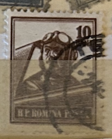
| SOURCE | TITLE| IMAGE MATCH | click to source page |
| Linns Stamp News | Have airmail stamps fallen victim to success? | 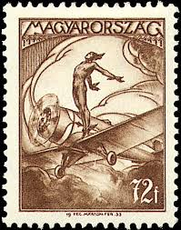 |
| U.S. Militaria Forum | Help Identify This Squadron Patch - VMO ? Group 918 Civil Air Patrol - CAN YOU IDENTIFY THIS PATCH? - U.S. Militaria Forum | 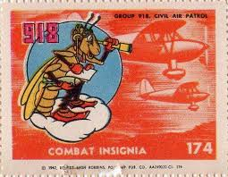 |
| eBay | Travelstamps: 1946-47 Czechoslovakia Airmail Stamps Scott #C23 Mint MOGH | eBay | 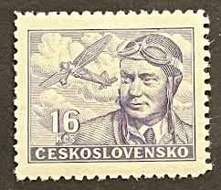 |
| Colnect | Hungary : Stamps [Year: 1933] [1/6] : Colnect 📮 | 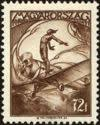 |
| ppowpalacyk.pl | Vinyl Decals Chemical Corps Seal Sticker - 4x4 Inch Army Chem Logo Decal Radioactive Sticker | 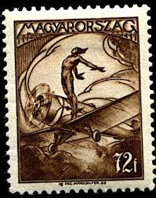 |
| Dreamstime.com | Old Romanian Stamp from 1953 with the Image of a Plowing Tractor Editorial Stock Image - Image of perforated, collection: 191424219 | 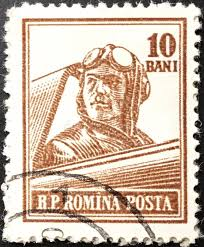 |
| hungarianstamps.co.uk | Hungarian Stamps - 1933 Issues | 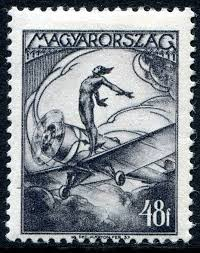 |
| eBay | Russia USSR ☭ 1976 SC 4500, 4504, 4590, 4594 MNH. rtc4707 | eBay | 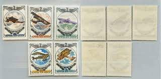 |
| HipStamp | United States-1918-24C Inverted Jenny-Error Rare Inverted Plane-22Kt Gold FDC | United States, Stamp / HipStamp | 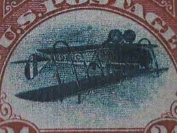 |
| HipStamp | USA 1983 - Scott 2057 used - 20c, Nikola Tesla | United States, General Issue Stamp / HipStamp | 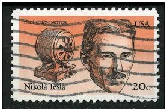 |
| Colnect | Romania : Stamps [Year: 1955] [1/7] : Colnect 📮 | 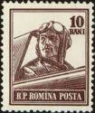 |
| Shutterstock | Brazil Circa 1951 Stamp Printed By Stock Photo 279057335 | Shutterstock | 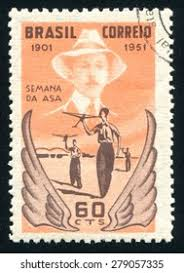 |
| eBay | Vietnam Aviation Stamps for sale | eBay | 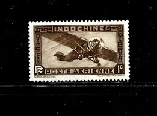 |
| Wikimedia.org | File:The Soviet Union 1937 CPA 560 stamp (Yakovlev AIR-7-Ya-7) cancelled.jpg - Wikimedia Commons | 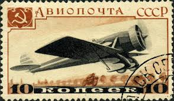 |
| eBay | Travelstamps: 1946-47 Czechoslovakia Airmail Stamps Scott #C21 Mint MOGH | eBay | 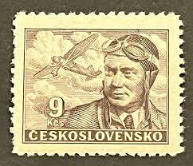 |
| eBay | France 1940 MNH Mi 474 Sc 396 Georges Guynemer,WW1 Ace, aviation pilot ** | eBay | 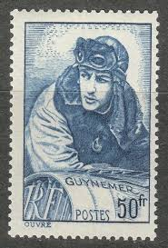 |
| eBay | Aircraft Wallis & Futuna 549 ** (MNH) | eBay | 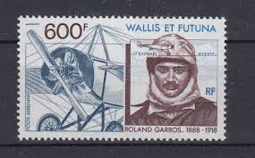 |
| eBay | Aircraft Santos Dumont - wing week Mi 773-74 Sn 713-14 Yt 501-2 RHM 270-71 MINT | eBay | 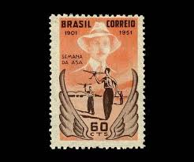 |
| tsfimagehost.net | Londonbus1 - The Stamp Forum Image Host | 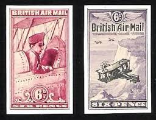 |
| eBay | 7 Vintage Hungarian Post Stamps, Magyar Posta - Aviation / Planes | eBay | 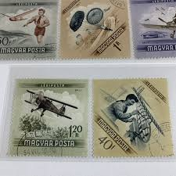 |
| eBay | Travelstamps: 1967 Madagascar Malagasy Stamps Scott #C84 - Dagnaux's Biplane CTO | eBay | 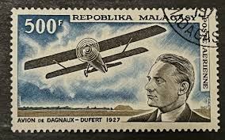 |
| eBay | France and Colonies Aviation Stamps for sale | eBay | 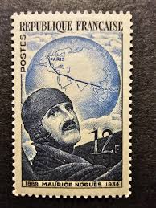 |
| eBay | FDC 1976 - Hafen Louis - Musée Atlantik ( Ref. 8243 ) | eBay | 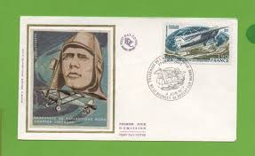 |
| eBay | French Morocco 1948 cover from Tanger to Gibraltar with unique cindirella stamps | eBay | 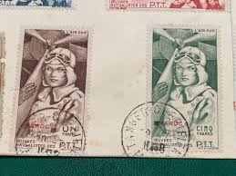 |
| eBay | 1940 France's 'Ace of Aces' buoyed public morale in World War I STAMP | eBay | 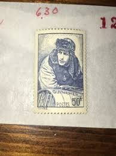 |
| ebid.net | France Stamps 1967 - SG 1750 - 40c Nungesser, Coli and "L'Oiseau Blanc - used on eBid United States | 159100600 | 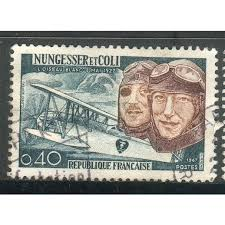 |
| eBay | United Kingdom Lundy, 1954 Aviation (BI#8/08072023) | eBay | 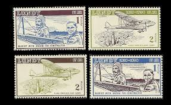 |
| eBay | Wallis & Futuna ScC157 Roland Garros, Bleriot Aircraft, Plane, Deluxe Proof | eBay | 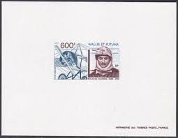 |
| Elizabethan Stamps | Browse Listings - Page 63 of 150 - 10 items per page - Highest Price First | Elizabethan Stamps | 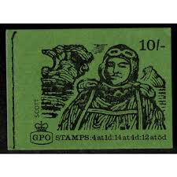 |
| Shutterstock | Brazil Circa 1951 Stamp Printed Brazil Stock Photo 110419316 | Shutterstock | 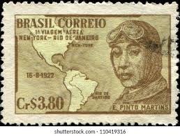 |
| Todocolección | belgica, 1958, rey balduino i, yvert 1068a - Buy Antique stamps of Belgium on todocoleccion | 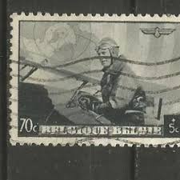 |
| HipStamp | US C93-C94 MNH VF 21 Cent Octave Chanute Pair | United States, Air Mail Stamp / HipStamp | 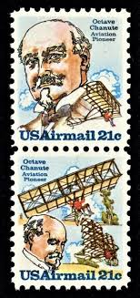 |
| eBay | Travelstamps:1937 Russia Stamps Sc# C69 Aviation Exhibition Used, OG, CTO | eBay | 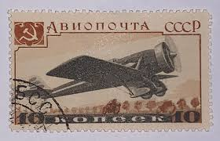 |
| eBay | FRANCE Sc 396 NH ISSUE OF 1940 - AVIATION - WORLD WAR I | eBay | 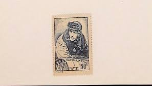 |
| eBay | Cambodia 1987 (875-881) Aviation | eBay | 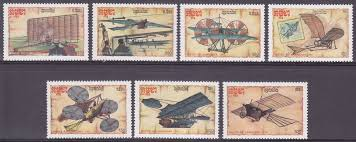 |
| Free stamp catalogue | Stamps from Poland - Freestampcatalogue.com - The free online stampcatalogue with over 500.000 stamps listed. | 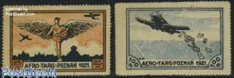 |
| Stamp Auction Network | Daniel F. Kelleher Auctions, LLC Sale - 721 Page 15 | 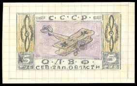 |
| Mystic Stamp | 4383//4502 - 1975-76 Russia - Mystic Stamp Company | 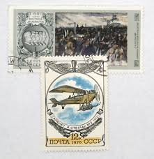 |
| eBay | FDC 1972 - Luftserie - Maryse Hilsz 1901-1946 (L5714) | eBay | 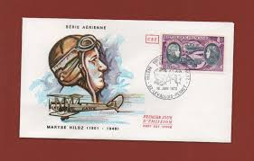 |
| eBay | Kampuchea Airplanes 1987 (16) Yvert No. 744 To 750 Canceled Used | eBay | 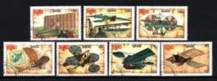 |
| eBay | Travelstamps: 1963 Monaco Air Mail Stamps Scott #C63 Mint MNH OG ** NUMBERED | eBay | 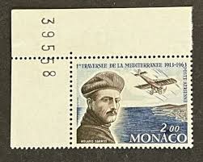 |
| eBay | Russia 1976 3K RUSSIAN AIRCRAFT GAKKEL VIII SC 4500 MNH | eBay | 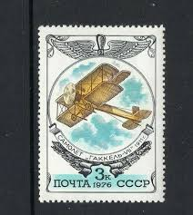 |
| eBay | France 1967 MNH Mi 1580 Sc 1181 Charles Nungesser & François Coli, aviators ** | eBay | 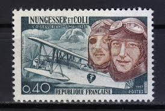 |
| nostalgia.su | USSR stamp "The creator of the world's first aircraft A. F. Mozhaisky", perfect condition | 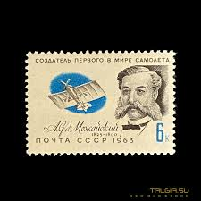 |
| eBay | France 396 Mint NH p2411.7859 | eBay | 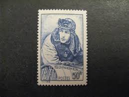 |
| eBay | STG797 Niger 2017 MNH 2 Sheets High CV Aviation Planes Louis Bleriot | eBay | 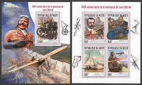 |
| eBay | Russia CCCP 1976 5 Different Book Plates of Vintage Aircraft | eBay | 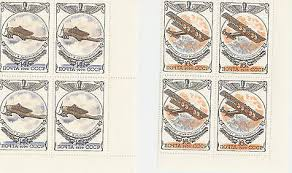 |
| Find Your Stamps Value | Value of flying horse italia 50 cent posta area stamps | 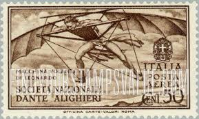 |
| Burda Auction | Exclusive items / Public Auction 53 | Burda Auction (Filatelie Burda) | 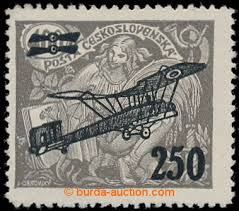 |
| Team-BHP | Stamps featuring Vintage and Classic Cars upto 1975 - Page 2 - Team-BHP | |
| Shutterstock | 38 Putilov Royalty-Free Images, Stock Photos & Pictures | Shutterstock | |
| eBay | Travelstamps:1937 Russia Stamps Sc# C69 Aviation Exhibition Used, NG | eBay | |
| 13 Stamps ideas | post stamp, postal stamps, stamp collecting | ||
| eBay | AOP) France 1972 Aviation Helene Boucher 10Fr Airmail FDC | eBay | |
| Pngtree | Wright PNG, Vector, PSD, and Clipart With Transparent Background for Free Download | Pngtree | |
| eBay | 1967, Niger, 146-48 u.a., ** - 1750511 | eBay | |
| eBay UK | Aviation Australian Stamp Booklets for sale | eBay UK | |
| eBay | 4806c Inverted Jenny $2 stamp Imperf Single (Lower Left position) No Die Cut | eBay | |
| eBay | Russia 1976 12K RUSSIAN AIRCRAFT GAKKEL IX SC 4502 MNH | eBay | |
| eBay | France Stamp Georges Guynemer Aviation No. 461 Mint ** Luxe MNH | eBay |
_cancelled.jpg){kind=link}